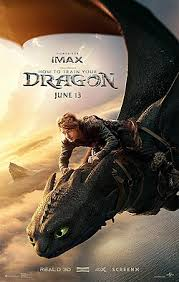
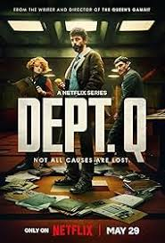

ფილმის სახელი: როგორ გავწვრთნათ დრაკონი
ფილმის შეფასება: 8.1 / 10
ფილმმის მოკლე აღწერა: რადგან უძველესი საფრთხე ბერკის კუნძულზე როგორც ვიკინგებს, ასევე დრაკონებს საფრთხეს უქმნის, გამომგონებელი ვიკინგის, ჰიკაპისა და უკბილო ღამის მრისხანების დრაკონის, მეგობრობა ორივე სახეობის ახალი მომავლის შექმნის გასაღები ხდება.

ფილმის სახელი: დეპარტამენტი Q
ფილმის შეფასება: 8.3 / 10
ფილლმის მოკლე აღწერა: კარლი, ყოფილი მაღალი რეიტინგის მქონე დეტექტივი, დანაშაულის გრძნობას განიცდის თავდასხმის შემდეგ, რომლის შედეგადაც მისი პარტნიორი პარალიზებული და კიდევ ერთი პოლიციელი გარდაცვლილი დარჩა. სამსახურში დაბრუნების შემდეგ, კარლს გაურკვეველი საქმის განხილვას დაავალებენ, რომელიც მის სიცოცხლეს წაართმევს.

ფილმის სახელი: ჩალა
ფილმის შეფასება: 6.5 / 10
ფილმის მოკლე აღწერა: მარტოხელა დედა უსიამოვნო მოვლენების სერიას აწყდება, რაც მას გაუთვალისწინებელ გზაზე მიჰყავს, სადაც ის ისეთ სიტუაციაში აღმოჩნდება, როგორსაც ვერასდროს წარმოიდგენდა და გულგრილ სამყაროში ეჭვის ცენტრში აღმოჩნდება.